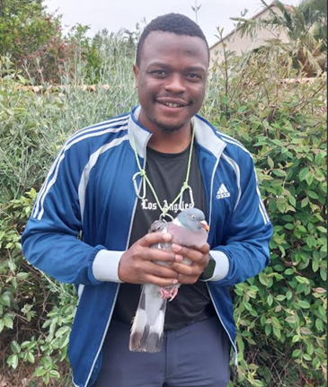

Projects
Current projects
Agricultural practices, parasitism and zoonotic risks in farmland birds (PhD project)

This doctoral project investigates how organic farming and pesticide exposure shape host–parasite interactions and the occurrence of pathogens of zoonotic interest in farmland birds. Conducted in the Zone Atelier Plaine & Val de Sèvre (western France), the research combines field ecology, parasitology, ecotoxicology and statistical modelling.
The project aims to characterise the diversity, prevalence and infection intensity of several groups of parasites and microorganisms associated with farmland birds, including intestinal parasites, haemoparasites, ectoparasites and potentially pathogenic fungi. It also examines how agricultural practices and pesticide exposure influence these infections and how parasitism, alone or in combination with pesticide exposure, may affect bird condition and other individual traits.
More broadly, the project seeks to better understand how agricultural intensification influences host–parasite interactions, wildlife health and the occurrence of pathogens of potential zoonotic importance in agricultural landscapes.
PhD supervisors: Prof. Jérôme Moreau and Dr Karine Monceau ( CEBC–CNRS / La Rochelle University ).
Urban greenspaces, avian diversity and zoonotic risk
This project aims to document avian biodiversity across urban green spaces in Yaoundé, Cameroon, and to contribute to the development of more bird-friendly urban environments. It investigates variation in bird diversity and community composition across urban habitats, with the broader goal of informing urban biodiversity conservation.
The project also examines avian parasites, including haemoparasites, intestinal parasites and ectoparasites, and explores the potential role of urban birds in the circulation of pathogens of zoonotic interest.
Overall, the research seeks to better understand the biodiversity value of urban green spaces and the ecological factors associated with parasite infections and potential zoonotic risks.
Project collaborators: TREND Foundation; Laboratory of Zoology, University of Yaoundé I; Cameroon Wildlife Conservation Initiative (CWCI); Daniella Manewoung; Crinan Jarrett.
Preliminary avian biodiversity inventory · August 2026 · 43 species recorded
Promoting conservation of agricultural birds (ProCAB project)
The ProCAB project aims to investigate how agricultural practices influence bird distribution, the ecosystem services provided by farmland birds and their parasite infections in the Moungo Basin, Littoral Region of Cameroon.
This region supports high biodiversity but has experienced substantial agricultural expansion and intensification over recent decades. These changes have been associated with habitat simplification, the modification of vegetation structure and increasing use of chemical agricultural inputs, potentially affecting farmland bird communities and their ecological functions.
The project seeks to assess bird diversity across different agricultural systems, investigate how farming practices influence bird assemblages and associated parasite infections, and explore the ecosystem services that birds provide within agricultural landscapes. It also aims to document farmers' knowledge, perceptions and attitudes towards farmland birds, including their perceived benefits and potential conflicts with agricultural activities.
Beyond its ecological objectives, ProCAB aims to promote sustainable, biodiversity-friendly farming practices through community engagement, environmental awareness and locally relevant conservation recommendations.
The project also incorporates a One Health perspective by investigating the potential role of farmland birds in the circulation of pathogens of zoonotic interest, thereby connecting agricultural practices, biodiversity conservation and wildlife health.
Project collaborators: TREND Foundation; Laboratory of Zoology, University of Yaoundé I; Cameroon Wildlife Conservation Initiative (CWCI); Daniella Manewoung; Crinan Jarrett.
Past projects
Host stress and transmission-stage investment in avian malaria (Master 2 project)
During my second-year Master's research project, I investigated how host physiological stress influences the within-host dynamics and transmission strategies of the avian malaria parasite Plasmodium relictum. Using experimentally infected domestic canaries (Serinus canaria) as a model system, the study examined parasite responses to elevated corticosterone levels.
The main objective was to determine how host stress affects parasitaemia, gametocytaemia, conversion to transmission stages and gametocyte sex allocation. By examining these different components of parasite development, the project aimed to better understand how changes in the host environment influence parasite investment in transmission and reproductive strategies.
This research contributed to a broader understanding of parasite phenotypic plasticity and the ecological mechanisms underlying host–parasite interactions.
Supervisors: Ana Rivero, Claire Loiseau, Arnaud Berthomieu and Valentin Chauvin ( UMR MiVEGEC ). Collaboration: Frédéric Angelier ( CEBC–CNRS ).
The long-term effects of Protocalliphora on plumage coloration in blue tits (Master 1 project)
This project investigated the short- and long-term effects of the blood-feeding ectoparasite Protocalliphora on the condition and plumage coloration of blue tits (Cyanistes caeruleus).
Using approximately 20 years of long-term monitoring data from nest-box populations in Corsican forests, the study examined how infestation by Protocalliphora larvae, which feed on blue tit nestlings, influences host condition and the expression of different types of plumage coloration.
The project specifically aimed to assess the immediate effects of infestation on nestling condition and the long-term carry-over effects of early-life parasitism on structural blue and carotenoid-based yellow coloration expressed by birds in their first year of life.
It also investigated potential indirect long-term effects on the plumage coloration of parents that had raised parasitised nestlings, to determine whether the costs of parasitism could extend beyond the directly infected individuals.
Overall, the project sought to better understand the role of parasitism in shaping the expression of different plumage colour traits in blue tits.
Supervisors: Claire Doutrelant, Claire Loiseau, Amélie Fargevieille and Lisa Sandmeyer ( UMR CEFE , Montpellier).
Bird and bat diversity in Lake Ossa Wildlife Reserve, Cameroon (Master project)
My Zoology Master’s research focused on bird and bat diversity in the Lake Ossa Wildlife Reserve, a wetland and forest-associated landscape in the Littoral Region of Cameroon. Birds and bats provide complementary perspectives on vertebrate biodiversity because they occupy partly overlapping habitats while differing in activity periods, mobility, foraging strategies and ecological roles.
The project aimed to inventory both taxonomic groups, describe their assemblages and examine their ecological use of habitats, including possible dimensions of niche overlap. Field surveys included mist-netting and complementary observations, enabling the documentation of species occurrence, community structure and variation among sampled sites. By examining birds and bats within the same protected landscape, the study sought to contribute baseline knowledge relevant to local biodiversity assessment and conservation planning.
The research also provided practical experience in tropical field ornithology, bat surveys and community-level biodiversity analysis. Such baseline surveys are particularly valuable in Central African ecosystems where biodiversity information remains incomplete and pressures on natural habitats are changing.
Supervisors: Prof. Sévilor Kekeunou and Prof. Eric Moïse Bakwo Fils. Equipment support: IDEA WILD.